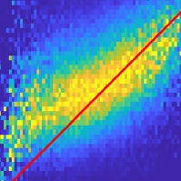

Publications
Book and Chapters

Machine Learning Techniques for Space Weather
(eds.) E. Camporeale, S. Wing, J. Johnson
Elsevier (2017)Regression, in Machine Learning Techniques for Space Weather
Untangling the solar wind drivers of radiation belt: an information theoretical approach, in Machine Learning Techniques for Space Weather
Probabilistic Forecasting of Geomagnetic Indices using Gaussian Process Models, in Machine Learning Techniques for Space Weather
Manuscripts
-
Machine-learning based discovery of missing physical processes in radiation belt modeling
E. Camporeale, G. J. Wilkie, A. Drozdov, J. Bortnik, under review
Real-time prediction of the dynamics of energetic electrons in Earth's radiation belts incorporating incomplete observation data is important to protect valuable artificial satellites and to understand their physical processes. Traditionally, reduced models have employed a diffusion equation based on the quasilinear approximation. Using a Physics-Informed Neutral Network (PINN) framework, we train and test a model based on four years of Van Allen Probe data. We present a recipe for gleaning physical insight from solving the ill-posed inverse problem of inferring model coefficients from data using PINNs.More/LessWith this, it is discovered that the dynamics of "killer electrons" is described more accurately instead by a drift-diffusion equation. A parameterization for the diffusion and drift coefficients, which is both simpler and more accurate than existing models, is presented.
-
A Machine-Learning-Ready Dataset Prepared from the Solar and Heliospheric Observatory Mission
C. Shneider, A. Hu, A. K. Tiwari, M. G. Bobra, K. Battams, J. Teunissen, E. Camporeale, under review
We present a Python tool to generate a standard dataset from solar images that allows for user-defined selection criteria and a range of pre-processing steps. Our Python tool works with all image products from both the Solar and Heliospheric Observatory (SoHO) and Solar Dynamics Observatory (SDO) missions. We discuss a dataset produced from the SoHO mission's multi-spectral images which is free of missing or corrupt data as well as planetary transits in coronagraph images, and is temporally synced making it ready for input to a machine learning system.More/LessMachine-learning-ready images are a valuable resource for the community because they can be used, for example, for forecasting space weather parameters. We illustrate the use of this data with a 3-5 day-ahead forecast of the north-south component of the interplanetary magnetic field (IMF) observed at Lagrange point one (L1). For this use case, we apply a deep convolutional neural network (CNN) to a subset of the full SoHO dataset and compare with baseline results from a Gaussian Naive Bayes classifier.

Published (Peer-reviewed)
2022
-
Probabilistic prediction of Dst storms one-day-ahead using Full-Disk SoHO Images
A. Hu, C. Shneider, A. Tiwari, E. Camporeale (2022) Space Weather, in press
We present a new model for the probability that the Disturbance storm time (Dst) index exceeds -100 nT, with a lead time between 1 and 3 days. Dst provides essential information about the strength of the ring current around the Earth caused by the protons and electrons from the solar wind, and it is routinely used as a proxy for geomagnetic storms. The model is developed using an ensemble of Convolutional Neural Networks (CNNs) that are trained using SoHO images (MDI, EIT and LASCO). The relationship between the SoHO images and the solar wind has been investigated by many researchers, but these studies have not explicitly considered using SoHO images to predict the Dst index.More/LessThis work presents a novel methodology to train the individual models and to learn the optimal ensemble weights iteratively, by using a customized class-balanced mean square error (CB-MSE) loss function tied to a least-squares (LS) based ensemble. The proposed model can predict the probability that Dst < − 100nT 24 hours ahead with a True Skill Statistic (TSS) of 0.62 and Matthews Correlation Coefficient (MCC) of 0.37. The weighted TSS and MCC from Guastavino et al. (2021) is 0.68 and 0.47, respectively. An additional validation during non-Earth-directed CME periods is also conducted which yields a good TSS and MCC score.
-
New Findings from Explainable SYM-H Forecasting using Gradient Boosting Machines
D. Iong, Y. Chen, G. Toth, S. Zou, T. Pulkkinen, J. Ren, E. Camporeale, T. Gombosi (2022) Space Weather, in press
In this work, we develop gradient boosting machines (GBMs) for forecasting the SYM-H index multiple hours ahead using different combinations of solar wind and interplanetary magnetic field (IMF) parameters, derived parameters, and past SYM-H values. Using Shapley Additive Explanation (SHAP) values to quantify the contributions from each input to predictions of the SYM-H index from GBMs, we show that our predictions are consistent with physical understanding while also providing insight into the complex relationship between the solar wind and Earth's ring current.More/LessWe also perform a direct comparison between GBMs and neural networks presented in prior publications for forecasting the SYM-H index by training, validating, and testing them on the same data. We find that the GBMs have a comparable root mean squared error as the best published black-box neural network schemes and GBMs have better Heidke Skill Scores at predicting strong storms.
-
Machine Learning Methods Applied to the Global Modeling of Event-Driven Pitch Angle Diffusion Coefficients During High Speed Streams
G. Kluth, J.-F. Ripoll, S. Has, A. Fischer, M. Mougeot and E. Camporeale (2022) Frontiers in Physics
Whistler-mode waves in the inner magnetosphere cause electron precipitation in the atmosphere through the physical process of pitch-angle diffusion. The computation of pitch-angle diffusion relies on quasi-linear theory and becomes time-consuming as soon as it is performed at high temporal resolution from satellite measurements of ambient wave and plasma properties. Such an effort is nevertheless required to capture accurately the variability and complexity of atmospheric electron precipitation, which are involved in various Earth’s ionosphere-magnetosphere coupled problems.More/LessIn this work, we build a global machine-learning model of event-driven pitch-angle diffusion coefficients for storm conditions based on the data of a variety of storms observed by the NASA Van Allen Probes. We first proceed step-by-step by testing 8 nonparametric machine learning methods. With them, we derive machine learning based models of event-driven diffusion coefficients for the storm of March 2013 associated with high-speed streams. We define 3 diagnostics that allow highlighting of the properties of the selected model and selection of the best method. Three methods are retained for their accuracy/efficiency: spline interpolation, the radial basis method, and neural networks (DNN), the latter being selected for the second step of the study. We then use event-driven diffusion coefficients computed from 32 high-speed stream storms in order to build for the first time a statistical event-driven diffusion coefficient that is embedded within the retained DNN model. We achieve a global mean event-driven model in which we introduce a two-parameter dependence, with both the Kp-index and time kept as in an epoch analysis following the storm evolution. The DNN model does not entail any issue to reproduce quite perfectly its target, i.e., averaged diffusion coefficients, with rare exception in the Landau resonance region. The DNN mean model is then used to analyze how mean diffusion coefficients behave compared with individual ones. We find a poor performance of any mean models compared with individual events, with mean diffusion coefficients computing the general trend at best, due to their large variability. The DNN-based model allows simple and fast data exploration of pitch-angle diffusion among its multiple variables. We finally discuss how to conduct uncertainty quantification of Fokker-Planck simulations of storm conditions for space weather nowcasting and forecasting.

-
Parameter Distributions for the Drag-Based Modeling of CME Propagation
G. Napoletano, R. Foldes, F. Berrilli, E. Camporeale, at al., (2022) Space Weather, in press
In recent years, ensemble modelling has been widely employed in space weather to estimate uncertainties in forecasts. We here focus on the ensemble modelling of CME arrival times and arrival velocities using a drag-based model, which is well-suited for this purpose due to its simplicity and low computational cost. Although ensemble techniques have previously been applied to the drag-based model, it is still not clear how to best determine distributions for its input parameters, namely the drag parameter and the solar wind speed.More/LessThe aim of this work is to evaluate statistical distributions for these model parameters starting from a list of past CME-ICME events. We employ LASCO coronagraph observations to measure initial CME position and speed, and in situ data to associate them to arrival date and impact speed. For each event we ran a statistical procedure to invert the model equations producing the parameters distributions as the output. Our results indicate that the distributions employed in previous works were appropriately selected, even though based on restricted samples and heuristic considerations.
2021
-
Connecting Large-Scale Velocity and Temperature Bursts with Small-Scale Intermittency in Stratified Turbulence
F. Feraco, R. Marino, L. Primavera, A. Pumir, P. Mininni, D. Rosenberg, A. Pouquet, R. Foldes, E. Lévêque, E. Camporeale, et al. (2021), EPL 135 14001
Non-Gaussian statistics of large-scale fields are routinely observed in data from atmospheric and oceanic campaigns and global models. Recent direct numerical simulations (DNSs) showed that large-scale intermittency in stably stratified flows is due to the emergence of sporadic, extreme events in the form of bursts in the vertical velocity and the temperature. This phenomenon results from the interplay between waves and turbulent motions, affecting mixing. We provide evidence of the enhancement of the classical small-scale (or internal) intermittency due to the emergence of large-scale drafts, connecting large- and small-scale bursts.More/LessTo this aim we analyze a large set of DNSs of the stably stratified Boussinesq equations over a wide range of values of the Froude number (Fr ~0.01-1). The variation of the buoyancy field kurtosis with Fr is similar to (though with smaller values than) the kurtosis of the vertical velocity, both showing a non-monotonic trend. We present a mechanism for the generation of extreme vertical drafts and vorticity enhancements which follows from the exact equations for field gradients.

-
ACCRUE: Accurate and Reliable Uncertainty Estimate in Deterministic models
E. Camporeale, A. Carè (2021), Int. J. Uncertainty Quantification , 11(4).
In this paper we focus on the problem of assigning uncertainties to single-point predictions generated by a deterministic model that outputs a continuous variable. This problem applies to any state-of-the-art physics or engineering models that have a computational cost that does not readily allow running ensembles and estimating the uncertainty associated to single-point predictions. Essentially, we devise a method to easily transform a deterministic prediction into a probabilistic one. We show that for doing so, one has to compromise between the accuracy and the reliability (calibration) of such a probabilistic model. Hence, we introduce a cost function that encodes their trade-off, and we call this new method ACCRUE (ACCurate and Reliable Uncertainty Estimate).More/LessWe use the continuous rank probability score to measure accuracy and we derive an analytic formula for the reliability, in the case of forecasts of continuous scalar variables expressed in terms of Gaussian distributions. The new ACCRUE cost function is then used to estimate the input-dependent variance, given a black-box "oracle" mean function, by solving a two-objective optimization problem. The simple philosophy behind this strategy is that predictions based on the estimated variances should not only be accurate, but also reliable (i.e., statistically consistent with observations). Conversely, early works based on the minimization of classical cost functions, such as the negative log probability density, cannot simultaneously enforce both accuracy and reliability. We show several examples both with synthetic data, where the underlying hidden noise can accurately be recovered, and with large real-world datasets.
-
Toward a next generation particle precipitation model: Mesoscale prediction through machine learning (a case study and framework for progress)
R. McGranaghan, J. Ziegler, T. Bloch, S. Hatch, E. Camporeale, K. Lynch, M. Owens, J. Gjerloev, B. Zhang, S.H. Skone (2021), Space Weather , 19, e2020SW002684.
We advance the modeling capability of electron particle precipitation from the magnetosphere to the ionosphere through a new database and use of machine learning tools to gain utility from those data. We have compiled, curated, analyzed, and made available a new and more capable database of particle precipitation data that includes 51 satellite years of Defense Meteorological Satellite Program (DMSP) observations temporally aligned with solar wind and geomagnetic activity data. The new total electron energy flux particle precipitation nowcast model, a neural network called PrecipNet, takes advantage of increased expressive power afforded by machine learning approaches to appropriately utilize diverse information from the solar wind and geomagnetic activity and, importantly, their time histories.More/LessWith a more capable representation of the organizing parameters and the target electron energy flux observations, PrecipNet achieves a >50% reduction in errors from a current state-of-the-art model (OVATION Prime), better captures the dynamic changes of the auroral flux, and provides evidence that it can capably reconstruct mesoscale phenomena. We create and apply a new framework for space weather model evaluation that culminates previous guidance from across the solar-terrestrial research community. The research approach and results are representative of the `new frontier' of space weather research at the intersection of traditional and data science-driven discovery and provides a foundation for future efforts.

-
Space Weather research in the Digital Age and across the full data lifecycle: Introduction to the Topical Issue
R. McGranaghan, E. Camporeale, M. Georgoulis, A. Anastasiadis (2021), J. Space Weather Space Clim., 11(50).
The onset and rapid advance of the Digital Age have brought challenges and opportunities for scientific research characterized by a continuously evolving data landscape reflected in the four V’s of big data: volume, variety, veracity, and velocity. The big data landscape supersedes traditional means of storage, processing, management, and exploration, and requires adaptation and innovation across the full data lifecycle (i.e., collection, storage and processing, analytics, and representation). The Topical Issue, “Space Weather research in the Digital Age and across the full data lifecycle”, collects research from across the full data lifecycle (collection, management, analysis, and communication; collectively “Data Science”) and offers a tractable compendium that illustrates the latest computational and data science trends, tools, and advances for Space Weather research.More/LessWe introduce the paradigm shift in Space Weather and the articles in the Topical Issue. We create a network view of the research that highlights the contribution to the change of paradigm and reveals the trends that will guide it hereafter.
2020
-
Identifying Magnetic Reconnection in 2D Hybrid Vlasov Maxwell Simulations with Convolutional Neural Networks
A. Hu, M. Sisti, F. Finelli, F. Califano, J. Dargent, M. Faganello, E. Camporeale , J. Teunissen (2020) Astrophys. J., 900, 1, 86
Magnetic reconnection is a fundamental process that quickly releases magnetic energy stored in a plasma. Identifying from simulation outputs where reconnection is taking place is nontrivial and, in general, has to be performed by human experts. Hence, it would be valuable if such an identification process could be automated. Here, we demonstrate that a machine-learning algorithm can help to identify reconnection in 2D simulations of collisionless plasma turbulence.More/LessUsing a Hybrid Vlasov Maxwell model, a data set containing over 2000 potential reconnection events was generated and subsequently labeled by human experts. We test and compare two machine-learning approaches with different configurations on this data set. The best results are obtained with a convolutional neural network combined with an "image cropping" step that zooms in on potential reconnection sites. With this method, more than 70% of reconnection events can be identified correctly. The importance of different physical variables is evaluated by studying how they affect the accuracy of predictions. Finally, we also discuss various possible causes for wrong predictions from the proposed model. -
Space-filter techniques for quasi-neutral hybrid-kinetic models
S.S. Cerri, E. Camporeale (2020) Phys. Plasmas, 27, 082102
The space-filter approach has been proved as a fundamental tool in studying turbulence in neutral fluids, providing the ability to analyze scale-to-scale energy transfer in configuration space. It is well known that turbulence in plasma presents challenges different from neutral fluids, especially when the scale of interest includes kinetic effects. The space-filter approach is still largely unexplored for kinetic plasma.More/LessHere, we derive the space-filtered (or equivalently “coarse-grained”) equations in configuration space for a quasi-neutral hybrid-kinetic plasma model, in which ions are fully kinetic and electrons are a neutralizing fluid. Different models and closures for the electron fluid are considered, including finite electron-inertia effects and full electrons' pressure-tensor dynamics. Implications for the cascade of turbulent fluctuations in real space depending on different approximations are discussed. -
A gray-box model for a probabilistic estimate of regional ground magnetic perturbations: Enhancing the NOAA operational Geospace model with machine learning.
E. Camporeale, M.D. Cash, H. J. Singer, C. C. Balch, Z. Huang, G. Toth (2020) J. Geophys. Res., 125, e2019JA027684
We present a novel algorithm that predicts the probability that the time derivative of the horizontal component of the ground magnetic field dB/dt exceeds a specified threshold at a given location. This quantity provides important information that is physically relevant to geomagnetically induced currents (GICs), which are electric currents associated with sudden changes in the Earth's magnetic field due to space weather events.More/LessThe model follows a “gray‐box” approach by combining the output of a physics‐based model with machine learning. Specifically, we combine the University of Michigan's Geospace model that is operational at the National Oceanic and Atmospheric Administration (NOAA) Space Weather Prediction Center, with a boosted ensemble of classification trees. We discuss the problem of recalibrating the output of the decision tree to obtain reliable probabilities. The performance of the model is assessed by typical metrics for probabilistic forecasts: Probability of Detection and False Detection, True Skill Statistic, Heidke Skill Score, and Receiver Operating Characteristic curve. We show that the ML‐enhanced algorithm consistently improves all the metrics considered. -
Bayesian inference of quasi-linear radial diffusion parameters using Van Allen Probes
R. Sarma, M. Chandorkar, I. Zhelavskaya, Y. Shprits, A. Drozdov, E. Camporeale J. Geophys. Res., 125, e2019JA027618.
The Van Allen radiation belts in the magnetosphere have been extensively studied using models based on radial diffusion theory, which is based on a quasi-linear approach with prescribed inner and outer boundary conditions. The 1-d diffusion model requires the knowledge of a diffusion coefficient and an electron loss timescale, which are typically parameterized in terms of various quantities such as the spatial (L) coordinate or a geomagnetic index (for example, Kp).More/LessThese terms are empirically derived, not directly measurable, and hence are not known precisely, due to the inherent non-linearity of the process and the variable boundary conditions. In this work, we demonstrate a probabilistic approach by inferring the values of the diffusion and loss term parameters, along with their uncertainty, in a Bayesian framework, where identification is obtained using the Van Allen Probe measurements. Our results show that the probabilistic approach statistically improves the performance of the model, compared to the parameterization employed in the literature. -
DYNAMIC TIME LAG REGRESSION: PREDICTING WHAT AND WHEN.
M. Chandorkar, Camporeale, E., C. Furthlener, B. Poduval, M. Sebag (2020) International Conference on Learning Representations 2020
This paper tackles a new regression problem, called Dynamic Time-Lag Regression (DTLR), where a cause signal drives an effect signal with an unknown time delay. The motivating application, pertaining to space weather modelling, aims to predict the near-Earth solar wind speed based on estimates of the Sun’s coronal magnetic field.More/LessDTLR differs from mainstream regression and from sequence-to-sequence learning in two respects: firstly, no ground truth (e.g., pairs of associated sub- sequences) is available; secondly, the cause signal contains much information irrelevant to the effect signal (the solar magnetic field governs the solar wind prop- agation in the heliosphere, of which the Earth’s magnetosphere is but a minuscule region). A Bayesian approach is presented to tackle the specifics of the DTLR problem, with theoretical justifications based on linear stability analysis. A proof of concept on synthetic problems is presented. Finally, the empirical results on the solar wind modelling task improve on the state of the art in solar wind forecasting.
2019
-
ViDA: a Vlasov-DArwin solver for plasma physics at electron scales.
O. Pezzi, Cozzani, G., Califano, F., Valentini, F., Guarrasi, M., Camporeale, E., ... & Veltri, P. (2019) Journal of Plasma Physics, 85,5
We present a Vlasov–DArwin numerical code (ViDA) specifically designed to address plasma physics problems, where small-scale high accuracy is requested even during the nonlinear regime to guarantee a clean description of the plasma dynamics at fine spatial scales.More/LessThe algorithm provides a low-noise description of proton and electron kinetic dynamics, by splitting in time the multi-advection Vlasov equation in phase space. Maxwell equations for the electric and magnetic fields are reorganized according to the Darwin approximation to remove light waves. Several numerical tests show that ViDA successfully reproduces the propagation of linear and nonlinear waves and captures the physics of magnetic reconnection. We also discuss preliminary tests of the parallelization algorithm efficiency, performed at CINECA on the Marconi-KNL cluster. ViDA will allow the running of Eulerian simulations of a non-relativistic fully kinetic collisionless plasma and it is expected to provide relevant insights into important problems of plasma astrophysics such as, for instance, the development of the turbulent cascade at electron scales and the structure and dynamics of electron-scale magnetic reconnection, such as the electron diffusion region. -
The challenge of machine learning in space weather nowcasting and forecasting.
E. Camporeale Reviews of Geophysics, Grand Challenges in the Earth and Space Sciences
The numerous recent breakthroughs in machine learning make imperative to carefully ponder how the scientific community can benefit from a technology that, although not necessarily new, is today living its golden age. This Grand Challenge review paper is focused on the present and future role of machine learning in Space Weather. The purpose is twofold.More/LessOn one hand, we will discuss previous works that use machine learning for Space Weather forecasting, focusing in particular on the few areas that have seen most activity: the forecasting of geomagnetic indices, of relativistic electrons at geosynchronous orbits, of solar flares occurrence, of coronal mass ejection propagation time, and of solar wind speed. On the other hand, this paper serves as a gentle introduction to the field of machine learning tailored to the Space Weather community and as a pointer to a number of open challenges that we believe the community should undertake in the next decade. The recurring themes throughout the review are the need to shift our forecasting paradigm to a probabilistic approach focused on the reliable assessment of uncertainties, and the combination of physics-based and machine learning approaches, known as gray box. -
On the Generation of Probabilistic Forecasts From Deterministic Models.
E. Camporeale , Chu, X., Agapitov, O. V., Bortnik, J. Space Weather,17(3), 455-475
Most of the methods that produce space weather forecasts are based on deterministic models. In order to generate a probabilistic forecast, a model needs to be run several times sampling the input parameter space, in order to generate an ensemble from which the distribution of outputs can be inferred. However, ensemble simulations are costly and often preclude the possibility of real-time forecasting. We introduce a simple and robust method to generate uncertainties from deterministic models, that does not require ensemble simulations.More/LessThe method is based on the simple consideration that a probabilistic forecast needs to be both accurate and well calibrated (reliable). We argue that these two requirements are equally important, and we introduce the Accuracy-Reliability cost function that quantitatively measures the trade-off between accuracy and reliability. We then define the optimal uncertainties as the standard deviation of the Gaussian distribution that minimizes the cost function. We demonstrate that this simple strategy, implemented here by means of a deep neural network, produces accurate and well-calibrated forecasts, showing examples both on synthetic and real-world space weather data.
-
Fourier–Hermite decomposition of the collisional Vlasov–Maxwell system: implications for the velocity-space cascade.
Pezzi, O., Valentini, F., Servidio, S., Camporeale, E. , & Veltri, P. Plasma Physics and Controlled Fusion, 61(5), 054005.
Turbulence at kinetic scales is an unresolved and ubiquitous phenomenon that characterizes both space and laboratory plasmas. Recently, new theories, in situ spacecraft observations and numerical simulations suggest a novel scenario for turbulence, characterized by a so-called phase-space cascade—the formation of fine structures, both in physical and velocity-space.More/LessThis new concept is here extended by directly taking into account the role of inter-particle collisions, modeled through the nonlinear Landau operator or the simplified Dougherty operator. The characteristic times, associated with inter-particle correlations, are derived in the above cases. The implications of introducing collisions on the phase-space cascade are finally discussed.
2018
-
Multiple hours ahead forecast of the Dst index using a combination of Long Short-Term Memory neural network and Gaussian Process
M. Gruet, M. Chandorkar, A. Sicard, E. Camporeale (2018), Space Weather, 16, 11
In this study, we present a method that combines a Long Short-Term Memory (LSTM) recurrent neural network with a Gaussian Process (GP) model to provide up to 6-hour ahead probabilistic forecasts of the Dst geomagnetic index. The proposed approach brings together the sequence modelling capabilities of a recurrent neural network with the error bars and confidence bounds provided by a Gaussian process.More/LessOur model is trained using the hourly OMNI and GPS databases, both of which are publicly available.We first develop a Long Short-Term Memory network to get a single point prediction of Dst. This model yields great accuracy in forecasting the Dst index from 1h ahead to 6h ahead, with a correlation coefficient always higher than 0.873 and a root mean square error lower than 9.86. However, even if global metrics show excellent performance, it remains poor in predicting intense storms (Dst<-250 nT) 6 hours in advance. To improve it and to obtain probabilistic forecasts, we combine the LSTM model obtained with a Gaussian process, and evaluate the hybrid predictor using the Receiver Operating Characteristic curve and the reliability diagram. We conclude that this hybrid methodology provides improvements in the forecast of geomagnetic storms, from 1 hour to 6 hours ahead.

-
Transfer entropy and cumulant based cost as measures of nonlinear causal relationships in space plasmas: applications to Dst
J. Johnson, S. Wing, E. Camporeale (2018), Ann. Geophys. in press
It is well known that the magnetospheric response to the solar wind is nonlinear. Information theoretical tools such as mutual information, transfer entropy, and cumulant based analysis are able to characterize the nonlinearities in the system. Using cumulant based cost, we show that nonlinear significance of Dst peaks at 3 − 12 hours lags that can be attributed to V Bs, which also exhibit similar behavior. However, the nonlinear significance that peaks at lags 25, 50, and 90 hours can be attributed to internal dynamics, which may be related to the relaxation of the ring current.More/LessThese peaks are absent in the linear and nonlinear self-significance of V Bs. Our analysis with mutual information and transfer entropy show that both methods can establish that there are a strong correlation and transfer of information from Vsw to Dst at a time scale that is consistent with that obtained from the cumulant based analysis. However, mutual information also shows that there is a strong correlation in the backward direction, from Dst to Vsw, which is counterintuitive. In contrast, transfer entropy shows that there is no or little transfer of information from Dst to Vsw, as expected because it is the solar wind that drives the magnetosphere, not the other way around. Our case study demonstrates that these information theoretical tools are quite useful for space physics studies because these tools can uncover nonlinear dynamics that cannot be seen with the traditional analyses and models that assume linear relationships.

-
Coherent structures and spectral energy transfer in turbulent plasma: a space-filter approach
E. Camporeale, L. Sorriso-Valvo, F. Califano, A. Retinò (2018), Phys. Rev. Lett. 120,125101
Plasma turbulence at scales of the order of the ion inertial length is mediated by several mechanisms, including linear wave damping, magnetic reconnection, the formation and dissipation of thin current sheets, and stochastic heating. It is now understood that the presence of localized coherent structures enhances the dissipation channels and the kinetic features of the plasma. However, no formal way of quantifying the relationship between scale-to-scale energy transfer and the presence of spatial structures has been presented so far. In the Letter we quantify such a relationship analyzing the results of a two-dimensional high-resolution Hall magnetohydrodynamic simulation. In particular, we employ the technique of space filtering to derive a spectral energy flux term which defines, in any point of the computational domain, the signed flux of spectral energy across a given wave number. The characterization of coherent structures is performed by means of a traditional two-dimensional wavelet transformation.More/LessBy studying the correlation between the spectral energy flux and the wavelet amplitude, we demonstrate the strong relationship between scale-to-scale transfer and coherent structures. Furthermore, by conditioning one quantity with respect to the other, we are able for the first time to quantify the inhomogeneity of the turbulence cascade induced by topological structures in the magnetic field. Taking into account the low space-filling factor of coherent structures (i.e., they cover a small portion of space), it emerges that 80% of the spectral energy transfer (both in the direct and inverse cascade directions) is localized in about 50% of space, and 50% of the energy transfer is localized in only 25% of space.
2017
-
Classification of Solar Wind with Machine Learning
E. Camporeale, A. Carè, J. Borovsky (2017), J. Geophys. Res.
We present a four-category classification algorithm for the solar wind, based on Gaussian Process. The four categories are the ones previously adopted in Xu and Borovsky [2015]: ejecta, coronal hole origin plasma, streamer belt origin plasma, and sector reversal origin plasma. The algorithm is trained and tested on a labeled portion of the OMNI dataset. It uses seven inputs: the solar wind speed V sw , the temperature standard deviation σ T , the sunspot number R, the f 10.7 index, the Alfven speed v A , the proton specific entropy Sp and the proton temperature Tp compared to a velocity-dependent expected temperature. The output of the Gaussian Process classifier is a four element vector containing the probabilities that an event (one reading from the hourly-averaged OMNI database) belongs to each category.More/LessThe probabilistic nature of the prediction allows for a more informative and flexible interpretation of the results, for instance being able to classify events as ’undecided’. The new method has a median accuracy larger than 90% for all categories, even using a small set of data for training. The Receiver Operating Characteristic curve and the reliability diagram also demonstrate the excellent quality of this new method. Finally, we use the algorithm to classify a large portion of the OMNI dataset, and we present for the first time transition probabilities between different solar wind categories. Such probabilities represent the ’climatological’ statistics that determine the solar wind baseline.
-
Probabilistic Forecasting of the Disturbance Storm Time Index: An Autoregressive Gaussian Process approach
M. Chandorkar, E. Camporeale, S. Wing (2017), Space Weather, 15, 1004
We present a methodology for generating probabilistic predictions for the Disturbance Storm Time(Dst) geomagnetic activity index. We focus on the One Step Ahead prediction task and use the OMNI hourly resolution data to build our models. Our proposed methodology is based on the technique of Gaussian Process Regression. Within this framework we develop two models; Gaussian Process Autoregressive (GP-AR) and Gaussian Process Autoregressive with eXogenous inputs (GP-ARX).More/LessWe also propose a criterion to aid model selection with respect to the order of autoregressive inputs. Finally, we test the performance of the GP-AR and GP-ARX models on a set of 63 geomagnetic storms between 1998 and 2006 and illustrate sample predictions with error bars for some of these events.
-
Adaptive selection of sampling points for uncertainty quantification
Camporeale, E. , Agnihotri, A., Rutjes, C. (2017), Int. J. Uncertainty Quant.,
We present a simple and robust strategy for the selection of sampling points in Uncertainty Quantification. The goal is to achieve the fastest possible convergence in the cumulative distribution function of a stochastic output of interest. We assume that the output of interest is the outcome of a computationally expensive nonlinear mapping of an input random variable, whose probability density function is known. We use a radial function basis to construct an accurate interpolant of the mapping. This strategy enables adding new sampling points one at a time, adaptively. This takes into full account the previous evaluations of the target nonlinear function.More/LessWe present comparisons with a stochastic collocation method based on the Clenshaw-Curtis quadrature rule, and with an adaptive method based on hierarchical surplus, showing that the new method often results in a large computational saving
-
Electron inertia and quasi-neutrality in the Weibel instability
E. Camporeale, C. Tronci (2017), J. Plasma Phys., 83
While electron kinetic effects are well known to be of fundamental importance in several situations, the electron mean-flow inertia is often neglected when length scales below the electron skin depth become irrelevant. This has led to the formulation of different reduced models, where electron inertia terms are discarded while retaining some or all kinetic effects. Upon considering general full-orbit particle trajectories, this paper compares the dispersion relations emerging from such models in the case of the Weibel instability. As a result, the question of how length scales below the electron skin depth can be neglected in a kinetic treatment emerges as an unsolved problem, since all current theories suffer from drawbacks of different nature.More/LessAlternatively, we discuss fully kinetic theories that remove all these drawbacks by restricting to frequencies well below the plasma frequency of both ions and electrons. By giving up on the length scale restrictions appearing in previous works, these models are obtained by assuming quasi-neutrality in the full Vlasov–Maxwell system.
-
Comparison of linear modes in kinetic plasma models
Camporeale, E. & Burgess, D (2017), J. Plasma Phys., 83
We compare, in an extensive and systematic way, linear theory results obtained with the hybrid (ion kinetic and electron fluid), the gyrokinetic and the fully kinetic plasma models. We present a test case with parameters that are relevant for solar wind turbulence at small scales, which is a topic now recognized to need a kinetic treatment, to a certain extent.More/LessWe comment on the comparison of low-frequency single modes (Alfvén/ion-cyclotron, ion-acoustic and fast modes) for a wide range of propagation angles, and on the overall spectral properties of the linear operators, for quasi-perpendicular propagation. The methodology and the results presented in this paper will be valuable when choosing which model should be used in regimes where the assumptions of each model are not trivially satisfied.
-
Dawn-dusk asymmetries in the auroral particle precipitation and their modulations by substorms
Wing, S., Johnson, J., Camporeale, E. (2017), AGU Monograph, in press
2016
-
On the propagation of uncertainties in radiation belt simulations
Camporeale, E., Y. Shprits, M. Chandorkar, A. Drozdov, S. Wing (2016), Space Weather
We present the first study of the uncertainties associated with radiation belt simulations, performed in the standard quasi-linear diffusion framework. In particular, we estimate how uncertainties of some input parameters propagate through the nonlinear simulation, producing a distribution of outputs that can be quite broad.More/LessHere, we restrict our focus on two-dimensional simulations (in energy and pitch angle space) of parallel-propagating chorus waves only, and we study as stochastic input parameters the geomagnetic index K p (that characterizes the time dependency of an idealized storm), the latitudinal extent of waves, and the average electron density. We employ a colloca- tion method, thus performing an ensemble of simulations. The results of this work point to the necessity of shifting to a probabilistic interpretation of radiation belt simulation results, and suggest that an accurate specification of a time-dependent density model is crucial for modeling the radiation environment.
-
Turbulence Heating ObserveR – satellite mission proposal
A. Vaivads et al. (2016), J. Plasma Phys., 82
The Universe is permeated by hot, turbulent, magnetized plasmas. Turbulent plasma is a major constituent of active galactic nuclei, supernova remnants, the intergalactic and interstellar medium, the solar corona, the solar wind and the Earth’s magnetosphere, just to mention a few examples. Energy dissipation of turbulent fluctuations plays a key role in plasma heating and energization, yet we still do not understand the underlying physical mechanisms involved.More/LessTHOR is a mission designed to answer the questions of how turbulent plasma is heated and particles accelerated, how the dissipated energy is partitioned and how dissipation operates in different regimes of turbulence. THOR is a single-spacecraft mission with an orbit tuned to maximize data return from regions in near-Earth space – magnetosheath, shock, foreshock and pristine solar wind – featuring different kinds of turbulence. Here we summarize the THOR proposal submitted on 15 January 2015 to the ‘Call for a Medium-size mission opportunity in ESAs Science Programme for a launch in 2025 (M4)’. THOR has been selected by European Space Agency (ESA) for the study phase.
-
Information theoretical approach to discovering solar wind drivers of the outer radiation belt
Wing, S., Johnson, J., Camporeale, E., Reeves, G. (2016), J. Geophys. Res., 121
The solar wind-magnetosphere system is nonlinear. The solar wind drivers of geosynchronous electrons with energy range of 1.8–3.5 MeV are investigated using mutual information, conditional mutual information (CMI), and transfer entropy (TE). These information theoretical tools can establish linear and nonlinear relationships as well as information transfer.More/LessThe information transfer from solar wind velocity (Vsw) to geosynchronous MeV electron flux (Je) peaks with a lag time of 2 days. As previously reported, Je is anticorrelated with solar wind density (nsw) with a lag of 1 day. However, this lag time and anticorrelation can be attributed at least partly to the Je(t + 2 days) correlation with Vsw(t) and nsw(t + 1 day) anticorrelation with Vsw(t). Analyses of solar wind driving of the magnetosphere need to consider the large lag times, up to 3 days, in the (Vsw, nsw) anticorrelation. Using CMI to remove the effects of Vsw, the response of Je to nsw is 30% smaller and has a lag time < 24 h, suggesting that the MeV electron loss mechanism due to nsw or solar wind dynamic pressure has to start operating in < 24 h. nsw transfers about 36% as much information as Vsw (the primary driver) to Je. Nonstationarity in the system dynamics is investigated using windowed TE. When the data are ordered according to transfer entropy value, it is possible to understand details of the triangle distribution that has been identified between Je(t + 2 days) versus Vsw(t).
-
Collisional effects on the numerical recurrence in Vlasov-Poisson simulations
Pezzi, O., E. Camporeale, F. Valentini (2016), Phys. Plasmas, 23, 022103
The initial state recurrence in numerical simulations of the Vlasov-Poisson system is a well-known phenomenon. Here we study the effect on recurrence of artificial collisions modeled through the Lenard-Bernstein operator [A. Lenard and I. B. Bernstein, Phys. Rev. {\bf 112}, 1456--1459 (1958)]. By decomposing the linear Vlasov-Poisson system in the Fourier-Hermite space, the recurrence problem is investigated in the linear regime of the damping of a Langmuir wave and of the onset of the bump-on-tail instability.More/LessThe analysis is then confirmed and extended to the nonlinear regime through a Eulerian collisional Vlasov-Poisson code. It is found that, despite being routinely used, an artificial collisionality is not a viable way of preventing recurrence in numerical simulations without compromising the kinetic nature of the solution. Moreover, it is shown how numerical effects associated to the generation of fine velocity scales, can modify the physical features of the system evolution even in nonlinear regime. This means that filamentation-like phenomena, usually associated with low amplitude fluctuations contexts, can play a role even in nonlinear regime.
-
On the velocity space discretization for the Vlasov-Poisson system: comparison between implicit Hermite spectral and Particle-in-Cell methods
Camporeale, E., G.L. Delzanno, B.K Bergen, J.D. Moulton (2016), Comp. Phys. Comm., 198, 47-58
We describe a spectral method for the numerical solution of the Vlasov- Poisson system where the velocity space is decomposed by means of an Hermite basis, and the configuration space is discretized via a Fourier decomposition. The novelty of our approach is an implicit time discretization that allows exact conservation of charge, momentum and energy.More/LessThe computational efficiency and the cost-effectiveness of this method are compared to the fully-implicit PIC method recently introduced by Markidis and Lapenta [52] and Chen et al. [15]. The following examples are discussed: Langmuir wave, Landau damping, ion-acoustic wave, two-stream instability. The Fourier- Hermite spectral method can achieve solutions that are several orders of magnitude more accurate at a fraction of the cost with respect to PIC.
2015
-
Wave-particle interactions with parallel whistler waves: nonlinear and time-dependent effects revealed by Particle-in-Cell simulations
Camporeale, E. & Zimbardo, G. (2015), Phys. Plasmas 22, 092104
We present self-consistent Particle-in-Cell simulations of the resonant interactions between anisotropic energetic electrons and a population of whistler waves, with parameters relevant to the Earth's radiation belt.More/LessBy tracking PIC particles, and comparing with test-particles simulations we emphasize the importance of including nonlinear effects and time evolution in the modeling of wave-particle interactions, which are excluded in the resonant limit of quasi-linear theory routinely used in radiation belt studies. In particular we show that pitch angle diffusion is enhanced during the linear growth phase, and it rapidly saturates. We discuss how the saturation is related to the fact that the domain in which the particles' pitch angle diffuse is bounded, and to the well-known problem of 90∘ diffusion barrier.
-
Resonant and non-resonant whistlers-particle interaction in the radiation belts
Camporeale, E. (2015), Geophys. Res. Lett., 42, 3114-3121,
We study the wave-particle interactions between lower band chorus whistlers and an anisotropic tenuous population of relativistic electrons. We present the first direct comparison of first-principle Particle-in-Cell (PIC) simulations with a quasi-linear diffusion code.More/LessIn the PIC approach, the waves are self-consistently generated by the temperature anisotropy instability that quickly saturates and relaxes the system towards marginal stability. We show that the quasi-linear diffusion and PIC results have significant quantitative mismatch in regions of energy/pitch angle where the resonance condition is not satisfied. Moreover, for pitch angles close to the loss cone the diffusion code overestimates the scattering, particularly at low energies. This suggests that higher order nonlinear theories should be taken in consideration in order to capture non-resonant interactions, resonance broadening, and to account for scattering at angles close to 90 degress.
-
Neutral Vlasov kinetic theory of magnetized plasmas
Tronci, C. & Camporeale, E. (2015), Phys. Plasmas., 22, 020704
The low-frequency limit of Maxwell equations is considered in the Maxwell-Vlasov system. This limit produces a neutral Vlasov system that captures essential features of plasma dynamics, while neglecting radiation effects.More/LessEuler-Poincare' reduction theory is used to show that the neutral Vlasov kinetic theory possesses a variational formulation in both Lagrangian and Eulerian coordinates. By construction, the model recovers all collisionless neutral models employed in plasma simulations. Then, comparisons between the neutral Vlasov system and hybrid kinetic-fluid models are presented in the linear regime.
-
Approximate semi-analytical solutions for the steady-state expansion of a contactor plasma
Camporeale, E., E. Hogan, E. MacDonald (2015) Plasma Sources Sci. Technol., 24 , 025014
We study the steady-state expansion of a collisionless, electrostatic, quasi- neutral plasma plume into vacuum, with a fluid model. We analyze approximate semi-analytical solutions, that can be used in lieu of much more expensive numerical solutions.More/LessIn particular, we focus on the earlier studies presented in Parks and Katz (1979) [1], Korsun and Tverdokhlebova (1997) [2], and Ashkenazy and Fruchtman (2001) [3]. By calculating the error with respect to the numerical solution, we can judge the range of validity for each solution. Moreover, we introduce a generalization of earlier models that has a wider range of applicability, in terms of plasma injection profiles. We conclude by showing a straightforward way to extend the discussed solutions to the case of a plasma plume injected with non-null azimuthal velocity.

-
Electron vortex magnetic holes: a nonlinear coherent plasma structure
Haynes, C. T., Burgess, D., Camporeale, E., & Sundberg, T. (2015), Phys. Plasmas 22, 012309
We report the properties of a novel type of sub-proton scale magnetic hole found in two dimensional PIC simulations of decaying turbulence with a guide field. The simulations were performed with a realistic value for ion to electron mass ratio. These structures, electron vortex magnetic holes (EVMHs), have circular cross-section. The magnetic field depression is associated with a diamagnetic azimuthal current provided by a population of trapped electrons in petal-like orbits.More/LessThe trapped electron population provides a mean azimuthal velocity and since trapping preferentially selects high pitch angles, a perpendicular temperature anisotropy. The structures arise out of initial perturbations in the course of the turbulent evolution of the plasma, and are stable over at least 100 electron gyroperiods. We have verified the model for the EVMH by carrying out test particle and PIC simulations of isolated structures in a uniform plasma. It is found that (quasi-)stable structures can be formed provided that there is some initial perpendicular temperature anisotropy at the structure location. The properties of these structures (scale size, trapped population etc.) are able to explain the observed properties of magnetic holes in the terrestrial plasma sheet. EVMHs may also contribute to turbulence properties, such as intermittency, at short scale lengths in other astrophysical plasmas.
2014
-
Vlasov simulations of kinetic Alfven waves at proton kinetic scales
Vasconez, C. L., Valentini, F., Camporeale, E., & Veltri, P. (2014), Phys. Plasmas, 21(11), 112107
Kinetic Alfvén waves represent an important subject in space plasma physics, since they are thought to play a crucial role in the development of the turbulent energy cascade in the solar wind plasma at short wavelengths (of the order of the proton gyro radius ρp and/or inertial length dp and beyond). A full understanding of the physical mechanisms which govern the kinetic plasma dynamics at these scales can provide important clues on the problem of the turbulent dissipation and heating in collisionless systems.More/LessIn this paper, hybrid Vlasov-Maxwell simulations are employed to analyze in detail the features of the kinetic Alfvén waves at proton kinetic scales, in typical conditions of the solar wind environment (proton plasma beta βp = 1). In particular, linear and nonlinear regimes of propagation of these fluctuations have been investigated in a single-wave situation, focusing on the physical processes of collisionless Landau damping and wave-particle resonant interaction. Interestingly, since for wavelengths close to dp and βp ≃ 1 (for which ρp ≃ dp ) the kinetic Alfvén waves have small phase speed compared to the proton thermal velocity, wave-particle interaction processes produce significant deformations in the core of the particle velocity distribution, appearing as phase space vortices and resulting in flat-top velocity profiles. Moreover, as the Eulerian hybrid Vlasov-Maxwell algorithm allows for a clean almost noise-free description of the velocity space, three-dimensional plots of the proton velocity distribution help to emphasize how the plasma departs from the Maxwellian configuration of thermodynamic equilibrium due to nonlinear kinetic effects.
-
Hybrid Vlasov-MHD models: Hamiltonian vs. non-Hamiltonian
Tronci, C., Tassi, E., Camporeale, E., & Morrison, P. J. (2014), Plasma Phys. and Controlled Fusion 56 095008
This paper investigates hybrid kinetic-magnetohydrodynamic (MHD) models, where a hot plasma (governed by a kinetic theory) interacts with a fluid bulk (governed by MHD). Different nonlinear coupling schemes are reviewed, including the pressure-coupling scheme (PCS) used in modern hybrid simulations.More/LessThis latter scheme suffers from being non-Hamiltonian and is unable to exactly conserve total energy. Upon adopting the Vlasov description for the hot component, the non-Hamiltonian PCS and a Hamiltonian variant are compared. Special emphasis is given to the linear stability of Alfvén waves, for which it is shown that a spurious instability appears at high frequency in the non-Hamiltonian version. This instability is removed in the Hamiltonian version.
-
Reconnection and electron temperature anisotropy in sub-proton scale plasma turbulence
Haynes, C. T., Burgess, D., & Camporeale, E. (2014), Astrophys. J. 783(1), 38
Knowledge of turbulent behavior at sub-proton scales in magnetized plasmas is important for a full understanding of the energetics of astrophysical flows such as the solar wind. We study the formation of electron temperature anisotropy due to reconnection in the turbulent decay of sub-proton scale fluctuations using two-dimensional, particle-in-cell plasma simulations with a realistic electron-proton mass ratio and a guide field perpendicular to the simulation plane.More/LessA power spectrum fluctuation with approximately power-law form is created down to scales of the order of the electron gyroradius. We identify the signatures of collisionless reconnection at sites of X-point field geometry in the dynamic magnetic field topology, which gradually relaxes in complexity. The reconnection sites are generally associated with regions of strong parallel electron temperature anisotropy. The evolving topology of magnetic field lines connected to a reconnection site allows for the spatial mixing of electrons accelerated at multiple, spatially separated reconnection regions. This leads to the formation of multi-peaked velocity distribution functions with strong parallel temperature anisotropy. In a three-dimensional system that can support the appropriate wave vectors, the multi-peaked distribution functions would be expected to be unstable to kinetic instabilities, contributing to dissipation. The proposed mechanism of anisotropy formation is also relevant to space and astrophysical systems where the evolution of the plasma is constrained by linear temperature anisotropy instability thresholds. The presence of reconnection sites leads to electron energy gain, nonlocal velocity space mixing, and the formation of strong temperature anisotropy; this is evidence of an important role for reconnection in the dissipation of turbulent fluctuations.
2013 and before
CPIC: A Curvilinear Particle-in-Cell Code for Plasma--Material Interaction Studies.
IEEE Transactions on Plasma Science, 41, 12, 3577 Download full text
More/Less
We describe a new electrostatic particle-in-cell (PIC) code in curvilinear geometry called curvilinear PIC (CPIC). The code models the microscopic (kinetic) evolution of a plasma with the PIC method, coupled with an adaptive computational grid that can conform to arbitrarily shaped domains. CPIC is particularly suited for multiscale problems associated with the interaction of complex objects with plasmas. A map is introduced between the physical space and the logical space, where the grid is uniform and Cartesian. In CPIC, most of the operations are performed in logical space. CPIC was designed following criteria of versatility, robustness, and performance. Its main features are the use of structured meshes, a scalable field solver based on the black box multigrid algorithm and a hybrid mover, where particles' position is in logical space while the velocity is in physical space. Test examples involving the interaction of a plasma with material boundaries are presented.
Modeling radiation belt electron dynamics during GEM challenge intervals with the DREAM3D diffusion model.
J. Geophys. Res., 118(10), 6197-6211. Download full text
More/Less
As a response to the Geospace Environment Modeling (GEM) “Global Radiation Belt Modeling Challenge,” a 3D diffusion model is used to simulate the radiation belt electron dynamics during two intervals of the Combined Release and Radiation Effects Satellite (CRRES) mission, 15 August to 15 October 1990 and 1 February to 31 July 1991. The 3D diffusion model, developed as part of the Dynamic Radiation Environment Assimilation Model (DREAM) project, includes radial, pitch angle, and momentum diffusion and mixed pitch angle-momentum diffusion, which are driven by dynamic wave databases from the statistical CRRES wave data, including plasmaspheric hiss, lower-band, and upper-band chorus. By comparing the DREAM3D model outputs to the CRRES electron phase space density (PSD) data, we find that, with a data-driven boundary condition at Lmax = 5.5, the electron enhancements can generally be explained by radial diffusion, though additional local heating from chorus waves is required. Because the PSD reductions are included in the boundary condition at Lmax = 5.5, our model captures the fast electron dropouts over a large L range, producing better model performance compared to previous published results. Plasmaspheric hiss produces electron losses inside the plasmasphere, but the model still sometimes overestimates the PSD there. Test simulations using reduced radial diffusion coefficients or increased pitch angle diffusion coefficients inside the plasmasphere suggest that better wave models and more realistic radial diffusion coefficients, both inside and outside the plasmasphere, are needed to improve the model performance. Statistically, the results show that, with the data-driven outer boundary condition, including radial diffusion and plasmaspheric hiss is sufficient to model the electrons during geomagnetically quiet times, but to best capture the radiation belt variations during active times, pitch angle and momentum diffusion from chorus waves are required.
On the numerical simulation of particle dynamics in the radiation belt: 1. Implicit and semi-implicit schemes.
J. Geophys. Res., 118(6), 3463-3475. Download full text
More/Less
The particle dynamics in the Earth's radiation belt is generally modeled by means of a two-dimensional diffusion equation for the particle distribution function in energy and pitch angle. The goal of this paper is to survey and compare different numerical schemes for the solution of the diffusion equation, and to outline the optimal strategy from a numerical point of view. We focus on the general (and more computationally challenging) case where the mixed terms in the diffusion tensor are retained. In Part 1, we compare fully implicit and semi-implicit schemes. For the former, we have analyzed a direct solver based on a LU decomposition routine for sparse matrices, and an iterative incomplete LU preconditioned Generalized Minimal REsidual solver. For the semi-implicit scheme, we have studied an alternating direction implicit scheme. We present a convergence study for a realistic case that shows that the time step and grid size are strongly constrained by the desired accuracy of the solution. We show that the fully implicit scheme is to be preferred in most cases as the more computationally efficient.
On the numerical simulation of particle dynamics in the radiation belt: 2. Procedure based on the diagonalization of the diffusion tensor.
J. Geophys. Res., 118(6), 3476-3484. Download full text
More/Less
In this paper, we conclude the survey and comparison of different numerical methods used to solve the diffusion equation for particle dynamics in the Earth's radiation belt, initiated in Camporeale et al. (2013). Here we focus on the diagonalization procedure introduced by Albert and Young (2005) that, by performing a change of coordinates, solves the diffusion equation in a space where the mixed diffusion terms are null. We describe the diagonalization procedure and its numerical implementation, which is not as straightforward as the implementation of a traditional solver in a rectangular domain. We compare the computing times with and without the diagonalization procedure, and we conclude that this procedure is generally not advantageous from the point of view of computational efficiency.
On particle movers in cylindrical geometry for Particle-In-Cell simulations. J. Comput. Physics, 253, 259-277. Download full text
More/Less
Three movers for the orbit integration of charged particles in a given electromagnetic field are analyzed and compared in cylindrical geometry. The classic Boris mover, which is of leap-frog type with position and velocities staggered by half time step, is connected to a second order Strang operator splitting integrator. In general the Boris mover is about 20% faster than the Strang splitting mover without sacrificing much in terms of accuracy. Furthermore, the Boris mover is second order accurate only for a very specific choice of the initial half step needed by the algorithm to get started. Unlike the case in Cartesian geometry, where any initial half step which is at least first order accurate does not compromise the second order accuracy of the method, in cylindrical geometry any attempt to use a more accurate initial half step does in fact decrease the accuracy of the scheme to first order. Through the connection with the Strang operator splitting integrator, this counter-intuitive behavior is explained by the fact that the error in the half step velocities of the Boris mover is proportional to the time step of the simulation.
For the case of a uniform and static magnetic field, we discuss the leap-frog cyclotronic mover, cylindrical analogue of the cyclotronic mover of Ref. [L. Patacchini and I. Hutchinson, J. Comput. Phys. 228 (7), 2009], where the step involving acceleration due to inertial forces is combined with the acceleration due to the magnetic part of the Lorentz force. The advantage of a cyclotronic mover is that the gyration of a charged particle in a magnetic field is treated analytically and therefore only the dynamics associated with the electric field needs to be resolved.
Verification of SpacePy's radial diffusion radiation belt model.
Geoscientific Model Development, 5(2), 277-287. Download full text
More/Less
Model verification, or the process of ensuring that the prescribed equations are properly solved, is a necessary step in code development. Careful, quantitative verification guides users when selecting grid resolution and time step and gives confidence to code developers that existing code is properly instituted. This work introduces the RadBelt radiation belt model, a new, open-source version of the Dynamic Radiation Environment Assimilation Model (DREAM) and uses the Method of Manufactured Solutions (MMS) to quantitatively verify it. Order of convergence is investigated for a plethora of code configurations and source terms. The ability to apply many different diffusion coefficients, including time constant and time varying, is thoroughly investigated. The model passes all of the tests, demonstrating correct implementation of the numerical solver. The importance of DLL and source term dynamics on the selection of time step and grid size is also explored. Finally, an alternative method to apply the source term is examined to illustrate additional considerations required when non-linear source terms are used.
Lower hybrid to whistler mode conversion on a density striation.
J. Geophys. Res., 117(A10). Download full text
More/Less
When a wave packet composed of short wavelength lower hybrid modes traveling in an homogeneous plasma region encounters an inhomogeneity, it can resonantly excite long wavelength whistler waves via a linear mechanism known as mode conversion. An enhancement of lower hybrid/whistler activity has been often observed by sounding rockets and satellites in the presence of density depletions (striations) in the upper ionosphere. We address here the process of linear mode conversion of lower hybrid to whistler waves, mediated by a density striation, using a scalar-field formalism (in the limit of cold plasma linear theory) which we solve numerically. We show that the mode conversion can effectively transfer a large amount of energy from the short to the long wavelength modes. We also study how the efficiency scales by changing the properties (width and amplitude) of the density striation. We present a general criterion for the width of the striation that, if fulfilled, maximizes the conversion efficiency. Such a criterion could provide an interpretation of recent laboratory experiments carried out on the Large Plasma Device at UCLA.
Nonmodal linear theory for space plasmas.
Space science reviews, 172, 397-409. Download full text
More/Less
The nonmodal approach is a linear theory formalism that emphasizes the transient evolution of a perturbed equilibrium. It differs from the normal-mode analysis by not assuming an exponential behavior of physical perturbations.
We discuss works that have applied the nonmodal formalism to the problem of solar wind heating and acceleration. We briefly review the methodology of the Kelvin formalism and of the Generalized Stability Theory, and discuss the cases of both sheared and non-sheared plasmas.
The results and methodology reviewed in this paper could form the basis for a trend of research in solar wind dynamics that has not been yet systematically explored.
The dissipation of solar wind turbulent fluctuations at electron scales
Astrophys. J. , 730 114 Download full text
More/Less
We present two-dimensional fully kinetic particle-in-cell simulations of decaying electromagnetic fluctuations. The computational box is such that wavelengths ranging from electron to ion gyroradii are resolved. The parameters used are realistic for the solar wind, and the ion-to-electron mass ratio is physical. The dissipation of turbulent fluctuations at small scales is thought to be a crucial mechanism for solar wind acceleration and coronal heating. The computational results suggest that a power-law cascade of magnetic fluctuations could be sustained up to scales of the electron Larmor radius and smaller. We analyze the simulation results in light of the Vlasov linear theory, and we comment on the particle heating. The dispersion curves of lightly damped modes in this regime suggest that a linear mechanism could be responsible for the observed steepening of power spectra at electron scales, but a straightforward identification of turbulent fluctuations as an ensemble of linear modes is not possible.
Implications of a Non-Modal Linear Theory for the Marginal Stability State and the Dissipation of Fluctuations in the Solar Wind
Astrophys. J. 715, 260-270 Download full text
More/Less
A magnetized plasma with anisotropic particle distributions may be unstable to a number of different kinetic instabilities. The solar wind is often observed in a state which is close to that implying instability, i.e., in a marginal stability state. Normal-mode linear theory predicts that fluctuations in a stable plasma damp exponentially. The nonmodal approach for a linearized system differs from a normal-mode analysis by following the temporal evolution of some perturbed equilibria, and therefore includes transient effects. We employ a non-modal approach for studying the stability of a bi-Maxwellian magnetized plasma using the Landau fluid model, which we briefly describe. We show that bi-Maxwellian stable equilibria can support transient growth of some physical quantities, and we study how these transients behave when an equilibrium approaches its marginally stable condition. The results obtained with a non-modal approach are relevant to a re-examination of the concept of linear marginal stability. Moreover, we highlight some aspects of the dissipation of turbulent fluctuations, which suggest that the non-modal approach should be included in future studies
Electron temperature anisotropy in an expanding plasma: Particle in Cell simulations
Astrophys. J. 710, 1848-1856 Download full text
More/Less
We perform fully kinetic particle-in-cell simulations of a hot plasma that expands radially in a cylindrical geometry. The aim of the paper is to study the consequent development of the electron temperature anisotropy in an expanding plasma flow as found in a collisionless stellar wind. Kinetic plasma theory and simulations have shown that the electron temperature anisotropy is controlled by fluctuations driven by electromagnetic kinetic instabilities. In this study, the temperature anisotropy is driven self-consistently by the expansion. While the expansion favors an increase of parallel anisotropy (T_par > T_perp ), the onset of the fire-hose instability will tend to decrease it. We show the results for supersonic, subsonic, and static expansion flows and suggest possible applications of the results for the solar wind and other stellar winds.
Transient growth in stable collisionless plasma
Phys. Plasmas. 16, 030703 Download full text
More/Less
The first kinetic study of transient growth for a collisionless homogeneous Maxwellian plasma in a uniform magnetic field is presented. A system which is linearly stable may display transient growth if the linear operator describing its evolution is non-normal so that its eigenvectors are nonorthogonal. In order to include plasma kinetic effects, a Landau fluid model is employed. The linear operator of the model is shown to be non-normal and the results suggest that the non-normality of a collisionless plasma is intrinsically related to its kinetic nature, with the transient growth being more accentuated for smaller scales and higher plasma beta. The results based on linear spectral theory have been confirmed with nonlinear simulations.
Parsek2D: An Implicit Parallel Particle-in-Cell Code
Numerical Modeling of Space Plasma Flows: ASTRONUM - 2008 406, 237 Download full text
More/Less
A Particle-in-Cell (PIC) code, called Parsek2D, for the simulation of astrophysical and space plasmas is presented. Parsek2D enables simulations with large grid spacing and long time step, by means of implicit time differentiation and parallel computing. An implicit formulation of the PIC algorithm removes the severe numerical stability constraints of explicitly time-differenced PIC. Parallel supercomputers are needed to meet the computational and memory storage requirements of large scale problems The implicit PIC algorithm, and its implementation on parallel computers are described. Simulations of magnetic reconnection using physical mass ratio are shown.
Electron firehose instability: Kinetic linear theory and two-dimensional particle-in-cell simulations
J. Geophys. Res., 113, A07107, doi:10.1029/2008JA013043 Download full text
More/Less
The kinetic electron firehose instability (EFI) is thought to be a crucial mechanism for constraining the observed electron anisotropy in expanding astrophysical plasmas, such as the solar wind. The EFI arises in a bi-Maxwellian plasma when the parallel temperature is greater than the perpendicular one, and its effect is to reduce anisotropy. We study this mechanism via kinetic linear theory, extending and refining previous results, and by new two-dimensional particle-in-cell (PIC) simulations with physical mass ratio. The results of PIC simulations show under which conditions the EFI can indeed be regarded as a constraint for electron distribution function. The detailed electron physics near marginal stability condition is discussed, with emphasis on the competition between growing and damping modes and on wave patterns formed at the nonlinear stage. The results also suggest an observational signature that the EFI has operated, namely the appearance of low-frequency, quasiperpendicular whistler/electron?cyclotron waves.
New approach for the study of linear Vlasov stability of inhomogeneous systems
Phys. Plasmas. 13, 092110 Download full text
More/Less
This paper presents an alternative technique for solving the linearized Vlasov-Maxwell set of equations, in which the velocity dependence of the perturbed distribution function is described by means of an infinite series of orthogonal functions, chosen as Hermite polynomials. The orthogonality properties of such functions allow us to decompose the Vlasov equation into a set of infinite coupled linear equations. With a suitable truncation relation, the problem is transformed in an eigenvalue problem. This technique is based on solid but easy concepts, not attempting to evaluate the integration over the unperturbed trajectories and can be applied to any equilibrium. Although the solutions are approximate, because they neglect contributions of higher order coefficients of the series, the physical meaning of the low-order coefficients is clear. Furthermore the accuracy of the solution, which depends on the number of terms taken into account in the Hermite series, appears to be merely a problem of computational power. The method has been tested for a 1D Harris equilibrium, known to give rise to several instabilities like tearing, drift kink, and lower hybrid. The results are shown in agreement with those obtained by Daughton with a traditional technique based on the integration over unperturbed orbits.
Model of bifurcated current sheets in the Earth's magnetotail: Equilibrium and stability
J. Geophys. Res. 110, A07206, doi:10.1029/2004JA010779 Download full text
More/Less
Recent observations of CLUSTER have reconfirmed the recurring presence of bifurcated current sheets. The present paper revisits the model of Schindler and Birn (2002) to describe analytically bifurcated current sheets. Our contributions are in order. First, we describe a number of analytical velocity distribution functions that lead to bifurcated current sheets. Second, we derive necessary and sufficient conditions that determine when current sheets can be produced within the mathematical model of Schindler and Birn (2002). Third, we present a class of bifurcated current sheets, and we describe their properties. Fourth, we study the stability of bifurcated current sheets to the tearing instability finding that bifurcated current sheets tend to be more stable. Finally, we investigate the stability of bifurcated current sheets to the lower hybrid drift instability (LHDI) and kinking instability proving their presence. The work reported here is intended to extend and investigate the properties of instabilities from the typical but academic case of the Harris current sheet to current sheet equilibria that are more realisticly representative of the real magnetotail.
Back to the top